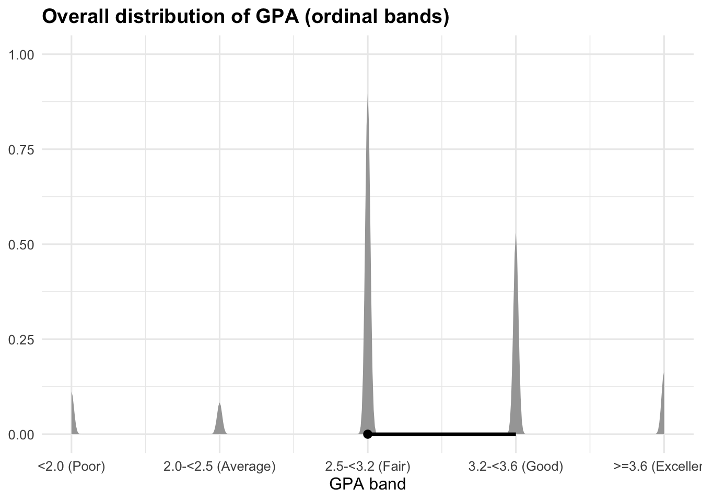
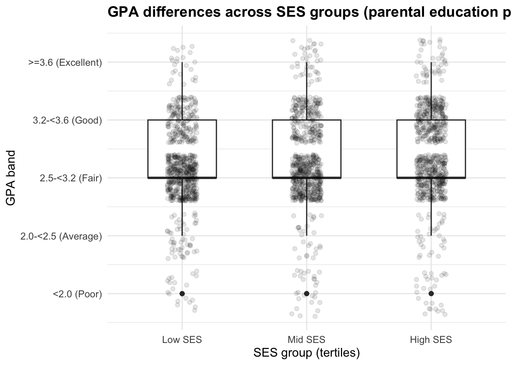
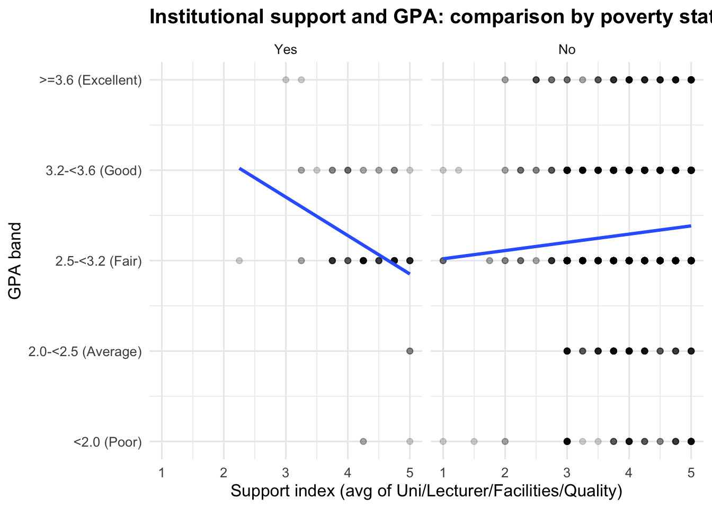

pacman::p_load(
tidyverse, readxl, janitor, skimr,
ggdist, ggridges, patchwork,
knitr, scales, stringr
)Take-home Exercise 1
Exploring Factors Associated with Student Learning Outcomes
1. Overview
1.1 Context & Analytical Framing
University administrators increasingly rely on survey data to identify (i) which student groups face higher academic risk, (ii) what learning behaviours correlate with performance, and (iii) which institutional supports are most strongly associated with improved learning outcomes.
This take-home exercise analyses a student survey dataset that captures multiple structural layers of student experience:
Background characteristics: Year, Gender, Minority status, Policy support status, Poverty status
Family socioeconomic proxies: Parents’ education and occupation
Time allocation behaviours: Study time, social media time, time with friends
Perceived learning environment: Adaptation to university, study methods, institutional support, facilities, lecturer quality, curriculum, competitive climate, peer influence
The outcome variable is an ordinal GPA band, reflecting academic performance categories rather than continuous scores.
Rather than conducting exhaustive exploratory analysis, this study adopts a structured analytical framing. The visualisations are organised to move from:
Baseline outcome distribution
Structural disparities (year, SES, minority)
Behavioural correlates
Institutional moderation
Engagement segmentation
The emphasis is on truthful, interpretable visual encodings that support decision-relevant insights, while preserving the ordinal and structural nature of the data.
1.2 Objectives
This post aims to:
Establish the baseline distribution of GPA bands to understand overall performance concentration.
Examine whether structural characteristics (academic year and minority status) are associated with differences in GPA distribution.
Evaluate whether socioeconomic proxies (parents’ education) relate to GPA disparities.
Compare behavioural correlates of performance by examining study time versus social media time.
Assess whether institutional support shows differential associations with GPA among disadvantaged students.
Provide an engagement segmentation view across GPA bands to identify behavioural clustering patterns that may inform targeted intervention strategies.
2. Methodology and Data Preparation Overview
This analysis follows a structured, reproducible workflow designed to preserve the ordinal structure of the survey data while ensuring interpretability and analytical transparency.
The data preparation process consisted of four key steps:
First, column names were standardised using janitor::clean_names() to ensure consistency and reproducibility.
Second, coded survey responses were explicitly coerced into integer format and recoded into labelled ordered factors. This step preserves the ordinal meaning of variables such as GPA bands, study time, and perceived support.
Third, transparent composite proxy indices were constructed to enable structured subgroup comparison:
- SES index, based on parents’ education, as a proxy for socioeconomic background.
- Engagement index, combining adaptation, study methods, and study time.
- Support index, reflecting perceived institutional support.
Finally, exploratory checks were conducted to confirm data completeness, validate variable structure, and establish the baseline distribution of the outcome variable (GPA).
These steps ensure that subsequent visualisations reflect the structural and ordinal nature of the data while supporting valid and interpretable comparisons.
3. Data Pre-processing & Data Exploration
3.1 Loading data & relevant libraries
This section ensures a reproducible, minimal-transformation pipeline. In line with the analytical framing (ordinal GPA as the outcome), we (i) standardise column names, (ii) validate required variables, and (iii) recode coded fields into interpretable ordered factors. Feature engineering is limited to transparent proxy indices used for stratification and comparison (not causal claims).
Besides tidyverse, the following packages will be used: readxl (Excel), janitor (standardise names), skimr (profiling), ggdist/ggridges (distribution visualisation), patchwork (composite plots), knitr (tables).
pacman::p_load(
tidyverse, readxl, janitor, skimr, ggdist, ggridges, patchwork, knitr, stringr
)data_path <- "data/Database paper.xlsx"
stopifnot(file.exists(data_path))
df_raw <- readxl::read_excel(data_path, sheet = 1)
orig_names <- names(df_raw)
df_raw <- df_raw %>% janitor::clean_names()
name_map <- tibble(original = orig_names, cleaned = names(df_raw))
knitr::kable(name_map, caption = "Column name mapping: original Excel → clean_names()")| original | cleaned |
|---|---|
| Year | year |
| Gender | gender |
| Policy_Stu | policy_stu |
| Minority_Stu | minority_stu |
| Poor_Stu | poor_stu |
| Father_Edu | father_edu |
| Mother_Edu | mother_edu |
| Father_Occupation | father_occupation |
| Mother_Occupation | mother_occupation |
| Time_Friends | time_friends |
| Time_SocialMedia | time_social_media |
| Time_Studying | time_studying |
| GPA | gpa |
| Adapt_Learning_Uni | adapt_learning_uni |
| Study_Methods | study_methods |
| SupportOf_Uni | support_of_uni |
| SupportOf_Lec | support_of_lec |
| Facilitie_Uni | facilitie_uni |
| Quality_Lecturer | quality_lecturer |
| TrainingCurriculum | training_curriculum |
| Competitive_Class | competitive_class |
| InfuenceF_Friends | infuence_f_friends |
3.2 Quick structure checks
Rows: 2,170
Columns: 22
$ year <dbl> 5, 5, 5, 5, 5, 5, 5, 5, 5, 5, 5, 5, 5, 5, 5, 5, 5,…
$ gender <dbl> 2, 1, 2, 2, 1, 2, 2, 2, 2, 2, 1, 2, 2, 2, 2, 2, 2,…
$ policy_stu <dbl> 2, 2, 2, 2, 1, 2, 2, 2, 2, 2, 2, 2, 2, 1, 2, 2, 2,…
$ minority_stu <dbl> 2, 2, 2, 2, 2, 2, 2, 2, 2, 2, 2, 2, 2, 2, 2, 2, 2,…
$ poor_stu <dbl> 2, 2, 2, 2, 2, 2, 2, 2, 2, 2, 2, 2, 2, 2, 2, 2, 2,…
$ father_edu <dbl> 4, 3, 4, 5, 2, 5, 6, 5, 5, 5, 3, 3, 3, 3, 3, 4, 5,…
$ mother_edu <dbl> 4, 3, 4, 4, 3, 5, 5, 4, 5, 4, 3, 3, 3, 4, 3, 4, 5,…
$ father_occupation <dbl> 2, 2, 1, 1, 3, 1, 1, 5, 1, 3, 3, 3, 3, 3, 2, 2, 4,…
$ mother_occupation <dbl> 3, 4, 2, 1, 3, 2, 4, 3, 1, 3, 3, 3, 3, 3, 2, 2, 4,…
$ time_friends <dbl> 2, 1, 1, 2, 1, 1, 2, 2, 1, 3, 2, 2, 2, 2, 2, 1, 3,…
$ time_social_media <dbl> 2, 3, 2, 2, 2, 3, 2, 2, 2, 2, 2, 1, 2, 2, 2, 3, 4,…
$ time_studying <dbl> 5, 5, 5, 5, 1, 2, 5, 5, 5, 5, 5, 5, 5, 1, 5, 5, 5,…
$ gpa <dbl> 4, 3, 4, 4, 4, 4, 3, 5, 5, 3, 3, 4, 4, 3, 5, 4, 4,…
$ adapt_learning_uni <dbl> 4, 3, 4, 4, 5, 4, 4, 4, 4, 3, 4, 4, 4, 5, 4, 4, 5,…
$ study_methods <dbl> 4, 3, 4, 4, 5, 4, 4, 4, 4, 4, 4, 4, 4, 5, 4, 3, 5,…
$ support_of_uni <dbl> 3, 3, 4, 5, 5, 5, 5, 5, 4, 5, 4, 4, 4, 5, 4, 4, 5,…
$ support_of_lec <dbl> 4, 4, 4, 5, 5, 4, 5, 4, 4, 5, 4, 4, 4, 5, 4, 4, 5,…
$ facilitie_uni <dbl> 4, 4, 3, 5, 5, 5, 5, 4, 4, 5, 4, 4, 4, 5, 4, 3, 5,…
$ quality_lecturer <dbl> 4, 3, 4, 5, 5, 5, 4, 5, 5, 5, 4, 4, 4, 5, 4, 4, 5,…
$ training_curriculum <dbl> 4, 3, 4, 4, 5, 4, 5, 4, 4, 5, 4, 4, 4, 5, 4, 3, 5,…
$ competitive_class <dbl> 3, 3, 4, 4, 4, 3, 4, 3, 4, 4, 4, 4, 4, 5, 4, 4, 5,…
$ infuence_f_friends <dbl> 3, 4, 4, 4, 5, 3, 5, 4, 4, 4, 4, 4, 4, 5, 4, 5, 4,…required_cols <- c(
"year","gender","policy_stu","minority_stu","poor_stu",
"father_edu","mother_edu","father_occupation","mother_occupation",
"time_friends","time_social_media","time_studying",
"gpa",
"adapt_learning_uni","study_methods",
"support_of_uni","support_of_lec","facilitie_uni","quality_lecturer",
"training_curriculum","competitive_class",
# peer influence column name may differ slightly across files
"peer_influence_col_placeholder"
)
# ---- Robust detection for "peer influence" column (common typos in dataset) ----
peer_candidates <- names(df_raw)[str_detect(names(df_raw), "influ|infu.*friend")]
if (length(peer_candidates) == 1) {
df_raw <- df_raw %>% rename(infuence_f_friends = all_of(peer_candidates))
} else if ("infuence_f_friends" %in% names(df_raw)) {
# already correct
} else if ("infuencef_friends" %in% names(df_raw)) {
df_raw <- df_raw %>% rename(infuence_f_friends = infuencef_friends)
}
required_cols <- required_cols %>%
replace(required_cols == "peer_influence_col_placeholder", "infuence_f_friends")
missing_cols <- setdiff(required_cols, names(df_raw))
if (length(missing_cols) > 0) {
stop(
paste0(
"Missing required columns after clean_names(): ",
paste(missing_cols, collapse = ", "),
"\n\nAvailable columns are:\n",
paste(names(df_raw), collapse = ", ")
)
)
}
# quick peek
dplyr::glimpse(df_raw)3.3 Data processing strategy & feature engineering
3.3.1 Coerce coded fields to numeric (minimal, explicit)
The survey fields are recorded as coded integers. We parse them into integers first (to avoid factor coercion pitfalls), then recode into labelled ordered factors in the next step.
| variable | class |
|---|---|
| year | integer |
| gender | integer |
| policy_stu | integer |
| minority_stu | integer |
| poor_stu | integer |
| father_edu | integer |
| mother_edu | integer |
| father_occupation | integer |
| mother_occupation | integer |
| time_friends | integer |
| time_social_media | integer |
| time_studying | integer |
| gpa | integer |
| adapt_learning_uni | integer |
| study_methods | integer |
| support_of_uni | integer |
| support_of_lec | integer |
| facilitie_uni | integer |
| quality_lecturer | integer |
| training_curriculum | integer |
| competitive_class | integer |
| infuence_f_friends | integer |
| variable | missing_rate |
|---|---|
| year | 0 |
| gender | 0 |
| policy_stu | 0 |
| minority_stu | 0 |
| poor_stu | 0 |
| father_edu | 0 |
| mother_edu | 0 |
| father_occupation | 0 |
| mother_occupation | 0 |
| time_friends | 0 |
| time_social_media | 0 |
| time_studying | 0 |
| gpa | 0 |
| adapt_learning_uni | 0 |
| study_methods | 0 |
coded_cols <- c(
"year","gender","policy_stu","minority_stu","poor_stu",
"father_edu","mother_edu","father_occupation","mother_occupation",
"time_friends","time_social_media","time_studying",
"gpa",
"adapt_learning_uni","study_methods",
"support_of_uni","support_of_lec","facilitie_uni","quality_lecturer",
"training_curriculum","competitive_class","infuence_f_friends"
)
df_raw2 <- df_raw %>%
mutate(
across(
all_of(coded_cols),
~ readr::parse_number(as.character(.x)) %>% as.integer()
)
)
header_types <- sapply(df_raw2, class)
knitr::kable(
tibble(variable = names(header_types), class = as.character(header_types)),
caption = "Column data types (after cleaning + coercion)"
)
missing_rate <- df_raw2 %>%
summarise(across(everything(), ~ mean(is.na(.x)))) %>%
pivot_longer(everything(), names_to = "variable", values_to = "missing_rate") %>%
arrange(desc(missing_rate))
knitr::kable(head(missing_rate, 15), caption = "Top 15 variables by missing rate")3.3.2 Recode coded fields into labelled ordered factors
We keep GPA as an ordered factor (ordinal outcome). Other ordinal items are also encoded as ordered factors to preserve survey scale meaning.
| Name | df |
| Number of rows | 2170 |
| Number of columns | 22 |
| _______________________ | |
| Column type frequency: | |
| factor | 22 |
| ________________________ | |
| Group variables | None |
Variable type: factor
| skim_variable | n_missing | complete_rate | ordered | n_unique | top_counts |
|---|---|---|---|---|---|
| year | 0 | 1 | TRUE | 3 | Gra: 1594, Fou: 441, Thi: 135, Fir: 0 |
| gender | 0 | 1 | FALSE | 2 | Fem: 1930, Mal: 240 |
| policy_stu | 0 | 1 | FALSE | 2 | No: 1404, Yes: 766 |
| minority_stu | 0 | 1 | FALSE | 2 | No: 2041, Yes: 129 |
| poor_stu | 0 | 1 | FALSE | 2 | No: 2084, Yes: 86 |
| father_edu | 0 | 1 | TRUE | 6 | Uni: 643, Hig: 603, Col: 370, Sec: 274 |
| mother_edu | 0 | 1 | TRUE | 6 | Hig: 592, Uni: 502, Col: 495, Sec: 294 |
| father_occupation | 0 | 1 | FALSE | 5 | Fre: 650, Sel: 565, Gov: 514, Oth: 409 |
| mother_occupation | 0 | 1 | FALSE | 5 | Fre: 695, Sel: 557, Gov: 491, Oth: 405 |
| time_friends | 0 | 1 | TRUE | 5 | 1-<: 785, 2-<: 590, <1h: 557, 3-<: 152 |
| time_social_media | 0 | 1 | TRUE | 5 | 1-<: 735, 2-<: 634, 3-<: 306, >=4: 266 |
| time_studying | 0 | 1 | TRUE | 5 | >=8: 1783, 6-<: 245, 4-<: 78, 2-<: 47 |
| gpa | 0 | 1 | TRUE | 5 | 2.5: 1189, 3.2: 692, 2.0: 109, >=3: 107 |
| adapt_learning_uni | 0 | 1 | TRUE | 5 | 3: 954, 4: 606, 5: 388, 2: 152 |
| study_methods | 0 | 1 | TRUE | 5 | 3: 869, 4: 674, 5: 474, 2: 120 |
| support_of_uni | 0 | 1 | TRUE | 5 | 5: 830, 4: 675, 3: 553, 2: 61 |
| support_of_lec | 0 | 1 | TRUE | 5 | 5: 968, 4: 706, 3: 448, 2: 28 |
| facilitie_uni | 0 | 1 | TRUE | 5 | 5: 927, 4: 677, 3: 399, 2: 131 |
| quality_lecturer | 0 | 1 | TRUE | 5 | 5: 1152, 4: 636, 3: 342, 2: 24 |
| training_curriculum | 0 | 1 | TRUE | 5 | 5: 869, 4: 779, 3: 465, 2: 45 |
| competitive_class | 0 | 1 | TRUE | 5 | 4: 772, 5: 680, 3: 629, 2: 76 |
| infuence_f_friends | 0 | 1 | TRUE | 5 | 4: 797, 3: 707, 5: 564, 2: 82 |
df <- df_raw2 %>%
mutate(
year = factor(
year, levels = 1:5,
labels = c("First-year","Second-year","Third-year","Fourth-year","Graduated"),
ordered = TRUE
),
gender = factor(gender, levels = 1:2, labels = c("Male","Female")),
minority_stu = factor(minority_stu, levels = 1:2, labels = c("Yes","No")),
policy_stu = factor(policy_stu, levels = 1:2, labels = c("Yes","No")),
poor_stu = factor(poor_stu, levels = 1:2, labels = c("Yes","No")),
father_edu = factor(
father_edu, levels = 1:6,
labels = c("Primary","Secondary","High school","College","University/Grad","Other"),
ordered = TRUE
),
mother_edu = factor(
mother_edu, levels = 1:6,
labels = c("Primary","Secondary","High school","College","University/Grad","Other"),
ordered = TRUE
),
father_occupation = factor(
father_occupation, levels = 1:5,
labels = c("Gov employee","Self-employment","Freelance","Other","Not public")
),
mother_occupation = factor(
mother_occupation, levels = 1:5,
labels = c("Gov employee","Self-employment","Freelance","Other","Not public")
),
time_friends = factor(
time_friends, levels = 1:5,
labels = c("<1h","1-<2h","2-<3h","3-<4h",">=4h"),
ordered = TRUE
),
time_social_media = factor(
time_social_media, levels = 1:5,
labels = c("<1h","1-<2h","2-<3h","3-<4h",">=4h"),
ordered = TRUE
),
time_studying = factor(
time_studying, levels = 1:5,
labels = c("<2h","2-<4h","4-<6h","6-<8h",">=8h"),
ordered = TRUE
),
gpa = factor(
gpa, levels = 1:5,
labels = c("<2.0 (Poor)","2.0-<2.5 (Average)","2.5-<3.2 (Fair)","3.2-<3.6 (Good)",">=3.6 (Excellent)"),
ordered = TRUE
),
across(
c(adapt_learning_uni, study_methods, support_of_uni, support_of_lec,
facilitie_uni, quality_lecturer, training_curriculum,
competitive_class, infuence_f_friends),
~ factor(.x, levels = 1:5, labels = as.character(1:5), ordered = TRUE)
)
)
skimr::skim(df)3.3.3 Feature engineering: transparent proxy indices (for stratification/comparison)
SES_index: parents’ education (father + mother), used to form Low/Mid/High tertiles.
Support_index: perceived institutional environment (uni + lecturer support + facilities + lecturer quality).
Engagement_index: learning engagement proxy (adaptation + study methods + study time).
# A tibble: 8 × 6
gpa gpa_n ses_index ses_group engagement_index support_index
<ord> <dbl> <dbl> <fct> <dbl> <dbl>
1 3.2-<3.6 (Good) 4 8 Mid SES 4.33 3.75
2 2.5-<3.2 (Fair) 3 6 Low SES 3.67 3.5
3 3.2-<3.6 (Good) 4 8 Mid SES 4.33 3.75
4 3.2-<3.6 (Good) 4 9 Mid SES 4.33 5
5 3.2-<3.6 (Good) 4 5 Low SES 3.67 5
6 3.2-<3.6 (Good) 4 10 High SES 3.33 4.75
7 2.5-<3.2 (Fair) 3 11 High SES 4.33 4.75
8 >=3.6 (Excellent) 5 9 Mid SES 4.33 4.5 | ses_group | n | pct |
|---|---|---|
| Low SES | 724 | 0.334 |
| Mid SES | 723 | 0.333 |
| High SES | 723 | 0.333 |
df2 <- df %>%
mutate(
gpa_n = as.numeric(gpa),
father_edu_n = as.numeric(father_edu),
mother_edu_n = as.numeric(mother_edu),
adapt_n = as.numeric(adapt_learning_uni),
method_n = as.numeric(study_methods),
study_n = as.numeric(time_studying),
uni_sup_n = as.numeric(support_of_uni),
lec_sup_n = as.numeric(support_of_lec),
faci_n = as.numeric(facilitie_uni),
lectq_n = as.numeric(quality_lecturer),
ses_index = father_edu_n + mother_edu_n,
engagement_index = rowMeans(cbind(adapt_n, method_n, study_n), na.rm = TRUE),
support_index = rowMeans(cbind(uni_sup_n, lec_sup_n, faci_n, lectq_n), na.rm = TRUE),
ses_group = ntile(ses_index, 3),
ses_group = factor(ses_group, labels = c("Low SES","Mid SES","High SES"))
)3.4 EDA (quality checks aligned to the outcome-centric framing)
3.4.1 Missingness overview (to assess reliability of downstream comparisons)
A preliminary inspection shows negligible missingness across core variables (all <1%), suggesting that downstream subgroup comparisons are unlikely to be biased by incomplete records.
3.4.2 Baseline outcome check: GPA band counts (sanity check for ordinal outcome)

gpa_counts <- df2 %>%
count(gpa) %>%
mutate(prop = n / sum(n))
ggplot(gpa_counts, aes(x = gpa, y = prop)) +
geom_col() +
scale_y_continuous(labels = scales::percent_format(accuracy = 1)) +
labs(
title = "Baseline distribution of GPA bands (count-normalised)",
x = "GPA band",
y = "Proportion"
) +
theme_minimal() +
theme(axis.text.x = element_text(angle = 15, hjust = 1))Baseline EDA shows that GPA is heavily concentrated in the mid bands. The majority of students fall within 2.5–<3.2 (Fair), accounting for more than half of the sample, followed by 3.2–<3.6 (Good) at roughly one-third. The lower bands (<2.5) and the highest band (≥3.6) each represent only a small minority. This indicates an imbalanced but ordinal distribution centred around average-to-good performance, with relatively few extreme low or high outcomes. The pattern supports treating GPA band as an ordinal outcome and suggests that subsequent modelling should account for class imbalance while preserving the natural ranking structure.
4. Analytical Visualisation
Common theme
theme_set(
theme_minimal(base_size = 12) +
theme(
plot.title = element_text(face = "bold"),
legend.position = "bottom"
)
)Visualisation 1 — Baseline distribution of GPA (ggdist)
Steps taken:
Use ordinal mapping
gpa_nconverted fromgpa(ordered factor).Use
stat_halfeye()to show the distribution and central mass.

p1 <- ggplot(df2, aes(x = gpa_n)) +
ggdist::stat_halfeye(adjust = 0.7, .width = 0.8) +
scale_x_continuous(
breaks = 1:5,
labels = levels(df2$gpa)
) +
labs(
title = "Overall distribution of GPA (ordinal bands)",
x = "GPA band",
y = NULL
)
p1The baseline distribution of GPA shows a clear concentration in the mid-performance bands. Most observations fall within the “2.5–<3.2 (Fair)” and “3.2–<3.6 (Good)” categories, indicating that the majority of students achieve moderate to relatively strong academic outcomes. The density mass is visibly highest around the Fair band, while the lower (<2.0) and highest (≥3.6) bands contain comparatively fewer students. The central interval highlights that GPA values are not evenly distributed but cluster within a relatively narrow academic range. This suggests limited polarization in performance and provides a stable reference point for subsequent subgroup comparisons (e.g., by socioeconomic background, study behaviour, or institutional support).
Visualisation 2 — Developmental structure: Year vs GPA
Steps taken:
Compare GPA distribution across academic years.
Use proportional stacked bars for structural clarity. 3. Interpret risk concentration patterns.

p_year <- ggplot(df2, aes(x = year, fill = gpa)) +
geom_bar(position = "fill") +
scale_y_continuous(labels = scales::percent_format()) +
labs(
title = "Proportional distribution of GPA bands across academic years",
x = "Academic Year",
y = "Proportion within year",
fill = "GPA band"
)
p_yearAcross academic years, GPA bands remain concentrated in the 2.5–3.2 (Fair) range, suggesting structural stability in overall performance distribution. However, the Graduated group shows a visibly higher proportion in the 3.2–3.6 (Good) band and a slight increase in the ≥3.6 (Excellent) segment. In contrast, Fourth-year students display relatively more concentration in the mid bands. This pattern may indicate mild positive selection or performance consolidation toward graduation, rather than dramatic academic mobility across years.
Visualisation 3 — Equity lens: Minority status vs GPA
Steps taken:
Compare GPA distribution by minority status.
Use proportional stacked bars to show structural differences.
Evaluate concentration of lower GPA bands.

p_minority <- ggplot(df2, aes(x = minority_stu, fill = gpa)) +
geom_bar(position = "fill") +
scale_y_continuous(labels = scales::percent_format()) +
labs(
title = "Proportional distribution of GPA bands by minority status",
x = "Minority status",
y = "Proportion within group",
fill = "GPA band"
)
p_minorityClear structural disparities emerge by minority status. Non-minority students show a higher proportion in the 3.2–3.6 (Good) and ≥3.6 (Excellent) bands, while minority students are more concentrated in the 2.5–3.2 (Fair) range. Although extreme low performance (<2.0) remains limited in both groups, the upward distribution shift among non-minority students suggests persistent performance gaps. The pattern signals potential equity concerns and highlights the importance of examining structural and institutional factors associated with academic outcomes.
Visualisation 4 — Structural disparity: SES vs GPA
Steps taken:
Build SES proxy from parents’ education (father_edu + mother_edu).
Split into Low/Mid/High SES tertiles based on ses_index.
Compare GPA bands across SES groups.

# If ses_group is not yet created in df2, you can build it robustly as follows:
df2 <- df2 %>%
mutate(
ses_group = if (!"ses_group" %in% names(df2)) {
cut(
ses_index,
breaks = quantile(ses_index, probs = c(0, 1/3, 2/3, 1), na.rm = TRUE),
include.lowest = TRUE,
labels = c("Low SES", "Mid SES", "High SES")
)
} else ses_group
)
p2 <- ggplot(df2, aes(x = ses_group, y = gpa_n)) +
geom_boxplot(width = 0.55, outlier.alpha = 0.25) +
geom_jitter(width = 0.12, alpha = 0.10) +
scale_y_continuous(breaks = 1:5, labels = levels(df2$gpa)) +
labs(
title = "GPA differences across SES groups (parental education proxy)",
x = "SES group (tertiles)",
y = "GPA band"
)
p2Students from higher SES backgrounds (measured by parental education) show a modest upward shift in GPA distribution. While all three groups concentrate in the “Fair” to “Good” bands, the High SES group displays slightly more observations in the “Good” and “Excellent” categories and fewer in the lower bands. Median GPA appears marginally higher for Mid and High SES relative to Low SES, though the distributions substantially overlap. This suggests that parental education is associated with academic outcomes, but the disparity is moderate rather than sharply segmented, indicating SES may influence performance without fully determining it.
Visualisation 6 — Institutional support as a moderator (poor vs non-poor)
Steps taken:
Build support_index from institutional environment items.
Compare relationship with GPA.
Facet by poor_stu to reveal potential moderation.

# Required columns check
req_cols <- c("poor_stu","gpa","gpa_n",
"support_of_uni","support_of_lec","facilitie_uni","quality_lecturer")
stopifnot(all(req_cols %in% names(df2)))
# Create support_index if not already present
if (!("support_index" %in% names(df2))) {
df2 <- df2 %>%
mutate(
support_index = rowMeans(
across(c(support_of_uni, support_of_lec, facilitie_uni, quality_lecturer),
~ as.numeric(.x)),
na.rm = TRUE
)
)
}
p4 <- ggplot(df2, aes(x = support_index, y = gpa_n)) +
geom_point(alpha = 0.18) +
geom_smooth(method = "lm", se = FALSE) +
facet_wrap(~ poor_stu) +
scale_y_continuous(breaks = 1:5, labels = levels(df2$gpa)) +
labs(
title = "Institutional support and GPA: comparison by poverty status",
x = "Support index (avg of Uni/Lecturer/Facilities/Quality)",
y = "GPA band"
)
p4This figure examines whether perceived institutional support aligns with GPA and whether the pattern differs by poverty status. Among non-poor students, the relationship between support_index and GPA appears mildly positive: higher perceived support corresponds to slightly higher GPA bands, though dispersion remains wide. For poor-household students, the pattern is more volatile and less clearly positive, suggesting that support alone may not uniformly translate into higher performance within this group. The divergence between panels is consistent with a moderation interpretation: institutional support may operate differently depending on socioeconomic background. From a policy perspective, this implies that while strengthening teaching quality and learning facilities benefits the broader student body, disadvantaged students may require more targeted or complementary interventions (e.g., mentoring, financial stability, structured academic guidance) for support mechanisms to effectively translate into improved academic outcomes.
Visualisation 7 — Engagement segmentation by GPA (ggridges)
Steps taken:
Build engagement_index from adaptation + study methods + study time.
Use ridge densities to compare engagement distributions across GPA bands.

p5 <- ggplot(df2, aes(x = engagement_index, y = gpa, fill = gpa)) +
ggridges::geom_density_ridges(alpha = 0.7, scale = 1.05, color = "white") +
labs(
title = "Engagement index distribution by GPA band",
x = "Engagement index (avg of Adaptation + Study Methods + Study Time)",
y = "GPA band"
) +
guides(fill = "none")
p5The ridge plot presents a segmentation-style view of engagement across GPA bands. The distributions shift progressively to the right as GPA increases, indicating that higher-performing students tend to report stronger adaptation to university learning, more effective study methods, and greater study time (as captured by the composite engagement index). Although the ridges overlap—showing that engagement does not perfectly determine performance—the gradient is clear: lower GPA bands concentrate more mass at lower engagement values, while “Good” and “Excellent” groups cluster at higher engagement levels. This pattern supports engagement as a meaningful and actionable correlate of academic outcomes. For intervention design, it suggests prioritising structured engagement-building strategies, particularly for students concentrated in the lower-left portion of the distribution.
Insight synthesis (7-step analytical progression)
Baseline: GPA is concentrated in mid-to-upper bands; improvement is best framed as moving students up one ordinal band.
Developmental: Lower GPA risk mass is more concentrated in earlier academic years, indicating a transition window for early interventions.
Equity: Minority-status comparison reveals whether learning outcome distributions differ structurally across identity groups.
Disparity: SES groups differ; Low SES carries higher risk mass in lower GPA bands.
Behaviour: Study time aligns more consistently with GPA than social media time.
Moderation: Institutional support shows stronger alignment with GPA among poor-household students.
Segmentation: Engagement distributions shift with GPA, providing a profile-based lens for interventions.
5. Conclusion
This analysis examined structural, behavioural, and institutional factors associated with student learning outcomes using ordinal GPA bands as the outcome variable.
Three key patterns emerge.
First, academic performance is concentrated within mid-level GPA bands, suggesting that improvement is more realistically framed as incremental movement across adjacent ordinal categories rather than extreme performance shifts.
Second, structural disparities are evident across socioeconomic and minority groups, with modest but consistent upward shifts in GPA associated with higher parental education and non-minority status. These findings highlight the role of background conditions in shaping academic outcomes.
Third, behavioural engagement—particularly study time and overall engagement index—shows the most consistent and systematic association with GPA. In contrast, social media use demonstrates weaker structural separation.
Institutional support shows mild alignment with GPA overall but appears less consistently associated among disadvantaged students, suggesting that support mechanisms may require targeted design to translate into effective academic gains.
Overall, the findings suggest that engagement-building strategies and early structural support may provide the most actionable pathways for improving student learning outcomes within this population.